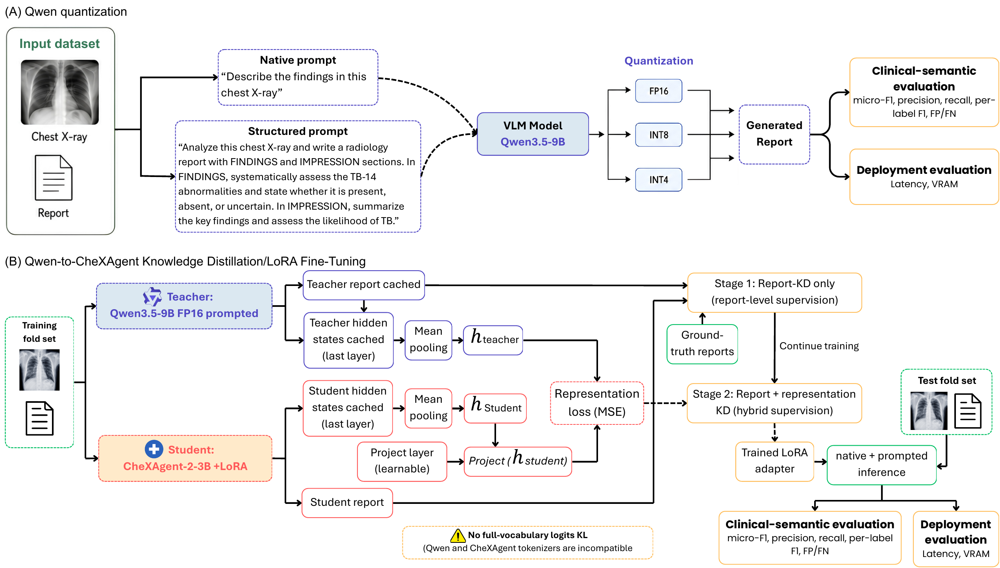
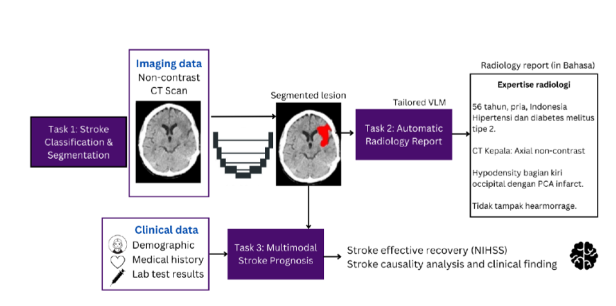

RESEARCH & PROJECTS
Research & Projects
My research focuses on medical imaging, multimodal machine learning, efficient and equitable AI for healthcare, with particular interests in low-resource and under-represented clinical settings.
This research explores tuberculosis detection and automated reporting from chest X-rays using Indonesian clinical and radiology contexts. A particular focus is on Bahasa Indonesia chest X-ray reporting and the challenges of developing AI systems that are useful beyond high-resource, English-language environments.
We investigate privacy-preserving approaches, including federated learning, alongside methods for low-resource languages and low-compute environments to enable efficient medical AI development and deployment.
Our work also examines visual-language models for tuberculosis chest X-ray reporting in Bahasa Indonesia, including reasoning behaviour and chain-of-thought ablation to better understand how different reasoning strategies affect model performance and reliability.

This research investigates when and how clinical information and medical imaging complement each other for stroke diagnosis and prognosis.
A particular focus is on modality-constrained settings common in many low- and middle-income countries, where only non-contrast CT scans may be routinely available and missing clinical or tabular information is unavoidable.
We study multimodal learning strategies that can combine medical imaging with available clinical information while remaining robust when one or more modalities are incomplete or unavailable.

This research explores causality and counterfactual medical image generation to better understand the factors influencing machine learning predictions in healthcare.
We investigate how counterfactual medical images can be used to identify potential sources of bias, support fairness auditing and improve the robustness of AI systems, particularly for under-represented populations in medical imaging datasets.
The project also explores highly parallel computing approaches for scaling counterfactual generation and evaluation, enabling systematic analysis across different populations, imaging characteristics and model behaviours.